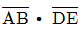
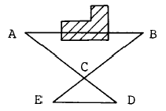
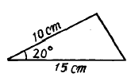

지적기능사 (2002-04-07 기출문제)
1과목: 지적일반(임의구분)
1. 다음 중 지적공부에 속하지 않는 것은?
- 지적도
- 가옥대장
- 임야대장
- 토지대장
(정답률: 90%)

2. 1910년 토지조사사업 당시의 조사내용에 해당되지 않는 것은?
- 토지의 소유권
- 토지의 가격
- 토지의 외모
- 토지의 지질
(정답률: 67%)
3. 면적의 측정이란 어떤 면적을 측정하는 것인가?
- 표면적
- 경사면적
- 수평면적
- 단면적
(정답률: 84%)
4. 다음 중 공유지연명부의 등록사항이 아닌 것은?
- 지번
- 소유권 지분
- 소유자 성명
- 토지등급
(정답률: 66%)
5. 다음 중 지적공부의 복구자료로 활용할 수 없는 것은?
- 측량결과도
- 지적공부 사본
- 부동산등기부 등본
- 지적공부 정리결의서
(정답률: 44%)
6. 우리나라에서 가장 많이 채택되고 있는 지번설정방식은?
- 사행식
- 교호식
- 기우식
- 단지식
(정답률: 75%)
7. 다음 중 지목을 임야로 설정할 수 없는 것은?
- 황무지
- 암석지
- 습지
- 호도재배지
(정답률: 67%)
8. 다음 중 지적제도를 토지경계 표시방법에 따라 분류한 것은?
- 세지적
- 입체지적
- 소극적 지적
- 도해지적
(정답률: 60%)
9. 다음 중 토지대장을 보고 알 수 없는 것은?
- 토지의 형태
- 토지의 면적
- 토지의 소재
- 토지의 소유자
(정답률: 32%)
10. 다음 중 현재의 지목에 해당하는 것은?
- 지소
- 수도선로
- 철도선로
- 사적지
(정답률: 60%)
11. 다음 중 최소제곱법을 적용하여 처리되는 오차는?
- 누차
- 잔차
- 정오차
- 우연오차
(정답률: 61%)
12. 일필지의 일부가 소유권이 변경된 경우에 새로운 경계를 설정하기 위하여 시행하는 지적측량은?
- 신규등록측량
- 토지분할측량
- 경계정정측량
- 경계복원측량
(정답률: 35%)
13. 도근점간 경사거리를 측정할 때 연직각 관측은 올려다 본 각과 내려다 본 각을 관측하여 그 교차가 얼마 이내이어야 하는가?
- 50초 이내
- 70초 이내
- 90초 이내
- 110초 이내
(정답률: 54%)
14. 다음 그림에서 AB 간의 거리는? (단, AC=10m, CD=5m, DE=7m,

이다.)
- 14 m
- 20 m
- 22 m
- 28 m
(정답률: 66%)
15. 도선법에 의한 측판측량을 실시하여 출발점에 폐색시킨 결과 25cm의 오차가 생겼다. 총 측선거리가 500m라면 측량의 정도는?
- 1/1000
- 1/1500
- 1/1200
- 1/2000
(정답률: 50%)
16. 방위각법에 의한 도선관측에서 측선의 경사거리 75.43m와 경사각 12° 34′ 를 구한 경우 이 측선의 수평거리는?
- 59.02m
- 63.92m
- 68.82m
- 73.62m
(정답률: 40%)
17. 축척이 1/1200 인 측판측량에서 도면제도의 허용오차를 0.2mm로 할 때 측점과 추의 구심이 잘 안되는 경우 허용범위는?
- 12 cm
- 10 cm
- 8 cm
- 6 cm
(정답률: 40%)
18. 지적삼각 보조측량에서 기준으로 하여 사용할 수 없는 점은?
- 삼각점
- 지적삼각점
- 지적삼각 보조점
- 도근점
(정답률: 48%)
19. 경위의 측량방법에 의한 세부측량시 수평각의 측각에서 1방향각의 공차는?
- 20초 이내
- 40초 이내
- 60초 이내
- 80초 이내
(정답률: 32%)
20. 측판측량방법에 의한 세부측량을 도선법으로 하는 경우 도선의 변수는?
- 10변 이하
- 20변 이하
- 30변 이하
- 40변 이하
(정답률: 70%)
2과목: 지적측량(임의구분)
21. 측판측량방법으로 세부측량을 실시할 때 사용할 수 없는 방법은?
- 도선법
- 경위의 측량법
- 방사법
- 교회법
(정답률: 61%)
22. 측판측량에서 발생하는 오차 중 결과에 가장 큰 영향을 주는 것은?
- 시준오차
- 표정오차
- 정준오차
- 제도오차
(정답률: 39%)
23. 지적 삼각측량에서 경위의측량방법에 의한 수평각의 관측은 어떻게 하는가?
- 3대회의 방향관측법에 의한다.
- 3배각으로 관측한다.
- 2대회의 방향관측법에 의한다.
- 2배각으로 관측한다.
(정답률: 30%)
24. 경위의 측량법에 의한 세부측량시 1배각과 2배각의 평균값에 대한 수평각 공차는?
- 20초 이내
- 30초 이내
- 40초 이내
- 50초 이내
(정답률: 34%)
25. 측판을 세우는데 필요한 3가지 조건으로 옳은 것은?
- 정준,구심,표정
- 정위,구심,치심
- 중심,구심,표정
- 표정,이심,정준
(정답률: 80%)
26. 다음 중 지적측량을 실시해야 할 대상이 아닌 것은?
- 지적공부를 복구할 때
- 토지를 지적공부에 새로이 등록할 때
- 토지를 분할할 때
- 토지를 합병할 때
(정답률: 69%)
27. 토지대장에 등록하는 순서로 옳은 것은?
- 소유자명의 가나다순서
- 과세의 등급순서
- 지번순서
- 지목별차례
(정답률: 74%)
28. 토지에 대한 지적공부의 등록을 말소시키는 경우는?
- 전쟁에 의하여 영토의 일부를 빼앗긴 때
- 홍수에 의하여 하천 구역내로 매몰된 때
- 토지가 해면이 되어 원상회복의 가능성이 없을 때
- 화재로 인하여 건물이 소실된 때
(정답률: 76%)
29. 다음 중 대행법인의 측량성과에 대하여 정확 여부를 검사하는 기관은?
- 지적위원회
- 측량지의 상급자
- 측량의뢰 기관
- 소관청
(정답률: 73%)
30. 다음 중 신규등록의 대상 토지로 볼 수 없는 것은?
- 소유권 이전 토지
- 미등록 도서
- 공유수면 매립 준공 토지
- 미등록 공공용 토지
(정답률: 36%)
31. 대장에 등록하는 면적의 단위는?
- 제곱킬로미터
- 제곱미터
- 제곱센티미터
- 헥타아르
(정답률: 87%)
32. 다음 중 소관청으로 볼 수 없는 자는?
- 부산시장
- 동대문구청장
- 남양주시장
- 포천군수
(정답률: 30%)
33. 다음 중 도해지역의 지적도 축척으로 가장 정밀한 것은?
- 1/500
- 1/1,000
- 1/1,200
- 1/2,400
(정답률: 69%)
34. 소관청은 축척변경의 시행에 관하여 시.도지사의 승인을 얻은 때에는 관계사항을 얼마동안 공고하여야 하는가?
- 5일
- 10일
- 15일
- 20일
(정답률: 33%)
35. 과태료 부과 발생시 며칠 이상의 기간을 정하여 과태료 처분대상자에게 구술 또는 서면에 의한 의견 진술기회를 주어야 하는가?
- 5일
- 7일
- 10일
- 15일
(정답률: 19%)
36. 토지소유자 또는 이해관계인이 소관청에 주소등록신청을 하였을 때 조사하는 사항이 아닌 것은?
- 정리일자
- 적용대상토지 여부
- 보증인 및 첨부서류의 적합 여부
- 대장상 소유자와 호적부에 등재된 자의 동일인 여부
(정답률: 49%)
37. 지적공부 등 집계표 이동정리 결의서를 작성하지 않아도 되는 것은?
- 토지 등급 설정
- 면적의 제곱미터 환산
- 집계표 이동정리
- 소유자 주소변경 통지
(정답률: 36%)
38. 지적공부에 등록하는 최소 면적의 단위는?
- 1제곱미터
- 0.5제곱미터
- 0.⑤제곱미터
- 0.1제곱미터
(정답률: 40%)
39. 지적공부의 정리를 목적으로 하는 토지이동 신청이 접수된후 소관청에서 조사할 사항이 아닌 것은?
- 수입증지의 첨부 여부
- 신청서의 기재사항과 지적공부 등록사항과의 부합 여부
- 관계법령의 저촉 여부
- 삼각측량 여부
(정답률: 39%)
40. 대장정리에서 결번대장의 보존년한은?
- 영구
- 준영구
- 10년
- 5년
(정답률: 66%)
3과목: 지적공부정리(임의구분)
41. 등록된 토지의 일부가 행정구역의 명칭이 변경되어 다른 지번지역에 속하게 된 때에는?
- 소관청은 새로이 지번을 정하여 정리한다.
- 종전의 지번에 부호를 붙여서 정리한다.
- 토지 소재만 변경하여 정리한다.
- 행정자치부장관의 통첩을 받아 정리한다.
(정답률: 68%)
42. 경계 또는 면적의 변경을 가져오는 경우 등록사항 정정시 첨부하여야 할 서류가 아닌 것은?
- 측량성과
- 정정사유서
- 이해관계인의 승낙서
- 신청 당시의 부동산등기부 등본
(정답률: 20%)
43. 다음 중 토지의 지번 숫자 앞에 "산"자를 붙여 표기되는 지적공부는?
- 토지대장
- 공유지연명부
- 임야대장
- 토지대장부본
(정답률: 77%)
44. 지적공부에 신규등록하는 토지의 소유자는 어떻게 등록 하는가?
- 소관청이 조사하여 등록한다.
- 무조건 국으로 등록한다.
- 소관청 명의로 등록한다.
- 신청자가 조사하여 등록한다.
(정답률: 69%)
45. 지적도에 지번과 지목주기시 지번과 지목간의 글자간격으로 맞는 것은?
- 글자크기의 1/8 정도
- 글자크기의 1/5 정도
- 글자크기의 1/3 정도
- 글자크기의 1/2 정도
(정답률: 54%)
46. 다음 중 검은색으로 제도해야 하는 것은?
- 일람도상의 지방도로
- 일람도상의 수도용지 중 선로
- 일람도상의 철도용지
- 지번, 지목의 말소선
(정답률: 51%)
47. 일람도 제도에서 도면번호의 크기는?
- 0.1 ㎜
- 0.2 ㎜
- 2 ㎜
- 3 ㎜
(정답률: 24%)
48. 측량준비도 작성에서 도해지역에 해당되지 않는 것은?
- 측량대상토지의 경계선, 지번, 지목
- 인근토지의 경계선, 지번, 지목
- 행정구역선과 그 명칭
- 경계점간 계산거리
(정답률: 47%)
49. 지적삼각점 및 지적삼각보조점은 직경 몇 mm의 원으로 제도해야 하는가?
- 1mm
- 2mm
- 3mm
- 4mm
(정답률: 58%)
50. 클로소이드와 렘니스케이트 같은 도로 곡선을 그리는데 적합한 제도용구는?
- 운형자
- 자유곡선자
- 철도곡선자
- 도로곡선자
(정답률: 53%)
51. 다음 중 면적 측정이 필요하지 않는 경우는?
- 경계를 정정할 때
- 면적을 정정할 때
- 토지를 합병할 때
- 토지를 분할할 때
(정답률: 66%)
52. 축척 1/500 인 그림과 같은 삼각형의 실제 면적은?

- 51.3 m2
- 150.0 m2
- 641.3 m2
- 1875.0 m2
(정답률: 37%)
53. 축척 1/500 통일원점 지역에서 도곽의 도상규격으로 옳은 것은?
- X=300mm, Y=400mm
- X=400mm, Y=500mm
- X=500mm, Y=600mm
- X=600mm, Y=1000mm
(정답률: 64%)
54. 축척 1/600 지적도 도곽의 윗쪽 횡선에 -1.5mm, 아래쪽 횡선 -1.4mm, 오른쪽 종선 +0.2mm, 왼쪽 종선 -0.5mm의 신축이 있는 경우 이 도곽의 신축량은 얼마인가?
- -0.8 mm
- -1.0 mm
- -1.6 mm
- -3.2 mm
(정답률: 41%)
55. 오차중 그 원인이 불명하여 주의를 하여도 제거할 수 없는 것은?
- 정오차
- 착오
- 누적오차
- 우차
(정답률: 30%)
56. 면적을 차인하여 산출할 수 있는 분할 전 원면적의 범위는 얼마인가?
- 3,000m2 이상
- 5,000m2 이상
- 1,000m2 이상
- 15,000m2 이상
(정답률: 36%)
57. 다음 중 필지별 면적측정의 방법에 해당하지 않는 것은?
- 삼사법
- 자동복사계산법
- 푸라니미터법
- 좌표면적계산법
(정답률: 38%)
58. 푸라니미터법으로 면적을 3회 측정하였을 때 독수교차라 함은 다음 중 무엇을 말하는 것인가?
- 1회 독수치와 2회 독수치와의 차를 말한다.
- 1회 독수치와 3회 독수치와의 차를 말한다.
- 평균 독수차를 말한다.
- 3회 측정치 중 최대치와 최소치와의 차를 말한다.
(정답률: 42%)
59. 동.리의 행정구역선을 제도할 때 옳은 방법은?
- 실선 1mm와 허선 1mm로 연결하여 제도한다.
- 실선 2mm와 허선 1mm로 연결하여 제도한다.
- 실선 3mm와 허선 1mm로 연결하여 제도한다.
- 실선 4mm와 허선 2mm로 연결하여 제도한다.
(정답률: 48%)
60. 1/1200 지역에서 1,600m2의 토지를 분할하고자 한다. 이 토지의 신구면적 허용오차는 얼마인가?
- 25m2
- 36m2
- 32m2
- 39m2
(정답률: 41%)